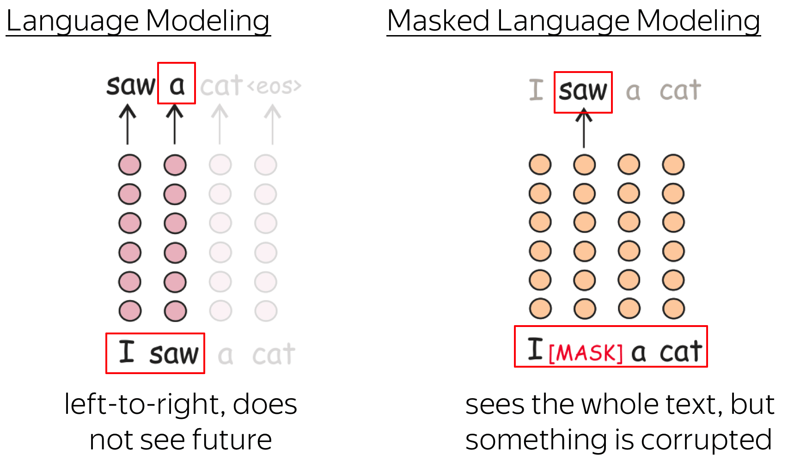
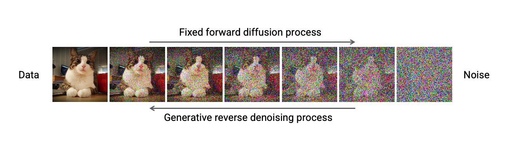

Integrative Structural Biology
Module 13 - Machine Learning in Structural Biology
1. Fundamentals of Machine Learning
2. Machine Learning in Structural Biology
Case story: Alphafold2
What is Machine Learning?
Machine learning algorithms build a model based on sample data, known as training data, in order to make predictions or decisions without being explicitly programmed to do so.
Machine Learning: Supervised vs unsupervised
- Supervised learning
- Training data consists of input data and output data
- Unsupervised learning
- Training data consists of input data only
Source: https://arxiv.org/abs/1910.05433
Machine Learning: offline vs online
- Offline learning
- Training data is available in advance
- Online learning
- Training data is a stream, rather than a static set. It arrives as we train the model (possibly in response to actions taken).
Data
In supervised learning, we learn a model that maps inputs values to output values.
Source: https://en.wikipedia.org/wiki/Domain_of_a_function
We typically call input data \(X\) and output data \(Y\).
The output values are also sometimes referred to as labels.
Regression vs classification
Parameters vs hyperparameters
- Parameters
- Values that are learned from the data
- Hyperparameters
- Values that are not learned during the training phase of the model. Related to model selection.
Loss function
For regression, we typically use mean squared error:
\[L = \frac{1}{N} \sum_{i=1}^N (y_i - \hat{y}_i)^2\] where \(y_i\) is the true value and \(\hat{y}_i\) is the predicted value.Training
We can now train the model by finding the parameters that minimize the loss.
Often, this is done by gradient descent, where we iteratively update the parameters in the direction of the gradient of the loss function.
Supervised models: Two examples
\(y = ax + b\)
Model: \(y = \frac{1}{k} \sum_{i=1}^k y_i\)

where \(y_i\) is the output value of the \(i\)th nearest neighbor.
- Are these regression or classification methods?
- What are the parameters and hyperparameters of these two models?
Unsupervised models: two examples
Neural networks
Remember linear regression?:\[y = ax + b\]
We can extend this to multiple inputs:\[y = w_1 x_1 + w_2 x_2 + \ldots + w_m x_m + b = \sum_{j=1}^{m}w_jx_j + b\]
 And visualize it like:
And visualize it like:
A neuron
A neuron calculates a weighted sum of its inputs:
And passes it through a non-linear activation function \(\sigma\).
A neuron - activation functions
Introduces a non-linearity in the network
Deep learning: many layers of neurons
Optimizing a neural network
- Initialize parameters to random solution
- Repeat: Update parameters: \(w_j \rightarrow w_j - \eta \frac{\partial L(\mathbf{w)}}{w_j}\)
So we just need a way to calculate \(\frac{\partial L(\mathbf{w)}}{w_j}\), the gradient of our loss with respect to the weights.
Backpropagation
The gradient can be calculated using an algorithm called backpropagation, by doing a forward pass followed by a backward pass.

Variations of neural networks
Over the years, many variants of neural networks have been developed to address specific types of data
- Recurrent neural networks
- Convolutional neural networks
- Graph neural networks
- Attention-based neural networks (transformers)
- Diffusion models
We'll very briefly introduce the basic idea behind each
Recurrent Neural Networks (RNNs)
How do we deal with sequential data?
Idea: model sequence position by position, but let the output of one position affect the prediction at the next position.

Convolutional Neural Networks (CNNs)
CNNs: filters
Graph Neural Networks (GNNs)
Graph neural networks employ a similar idea as CNNs, but for graphs rather than images.
Attention-based networks (e.g. transformers)
Introduced as an improvement of recurrent neural networks. Source: https://ai.googleblog.com/2017/08/transformer-novel-neural-network.html
Source: https://ai.googleblog.com/2017/08/transformer-novel-neural-network.html
 Source: https://uvadlc-notebooks.readthedocs.io/en/latest/tutorial_notebooks/tutorial6/Transformers_and_MHAttention.html
Source: https://uvadlc-notebooks.readthedocs.io/en/latest/tutorial_notebooks/tutorial6/Transformers_and_MHAttention.htmlSelf-supervised training (language models)
Self-supervised training is a special case of unsupervised learning, where we use the data itself to generate labels.  Source: https://lena-voita.github.io/nlp_course/transfer_learning.htmlThis is the basic principle behind models such as ChatGPT - and are also increasingly being used for biological sequences.
Diffusion models
- Use neural network to learn how to denoise from \(x_t\) to \(x_{t-1}\)
Overfitting and underfitting
Depending on the choice of model and hyperparameters, our model might underfit or overfit.
Q: How do we know when we have an "optimal" fit?
A: We test our model on a holdout set
Training, validation, and test sets
How do we assess how well our model is doing?
Simple idea: split the data:
 Note: this only works if the test set is representative of the data we want to predict.
Note: this only works if the test set is representative of the data we want to predict.
Sample bias / selection bias
Machine learning methods work under the assumption that training set and test set are sampled from the same distribution.
If the sample you train on is not representative of the underlying population, we call this sample bias.

Different notions of "Bias"
Note that the word bias is used in different ways in machine learning:- Sample bias
- Training set is not representative of the data we want to predict
- Inductive bias
- Assumptions made by the model
- Bias and variance
- How well does the model fit the data
Bias/variance trade-off
Two central concepts in modeling: bias and variance
Bias in this case means the model produces estimates that are systematically wrong
Machine Learning in
structural biology
Machine Learning in structural biology
Three important examples:
- Secondary structure prediction
- Contact prediction
- 3D Structure prediction
Secondary structure prediction
Secondary structure prediction from multiple sequence alignments
Contact map prediction
Marks, Hopf, Sanders, Nature biotechnology, 2012
3D structure prediction
AlphaFold 1

AlphaFold 2
Confidence scores: pLDDT
AF2 predicts a confidence score for each residue, called pLDDT (predicted local distance difference test).
It is a measure of how well the predicted structure fits the input data. It is a number between 0 and 100, where 100 is the best possible score.
This is a local score.
Confidence scores: PAE
AF2 also predicts a confidence score for each pair of residues, called pAE (predicted aligned error).
It reports on how accurate a position \(r_i\) is, if the global structures have been aligned on \(r_j\)
This is a global score.